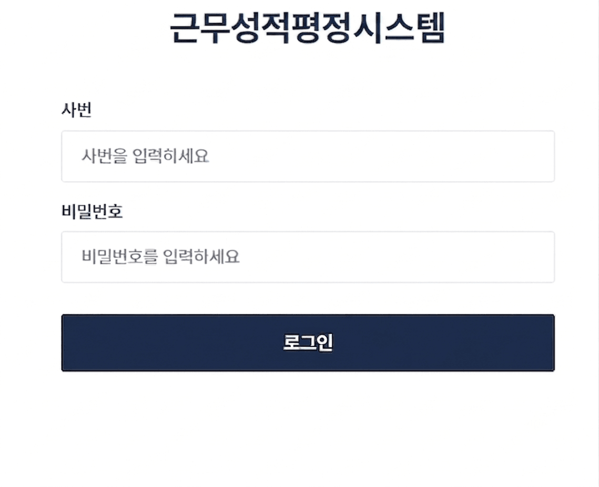
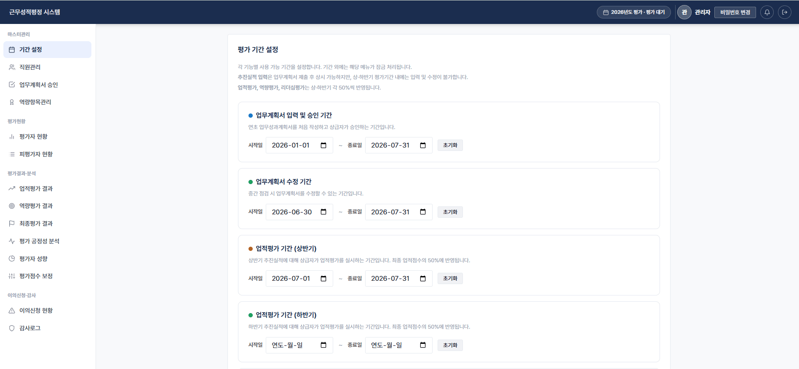
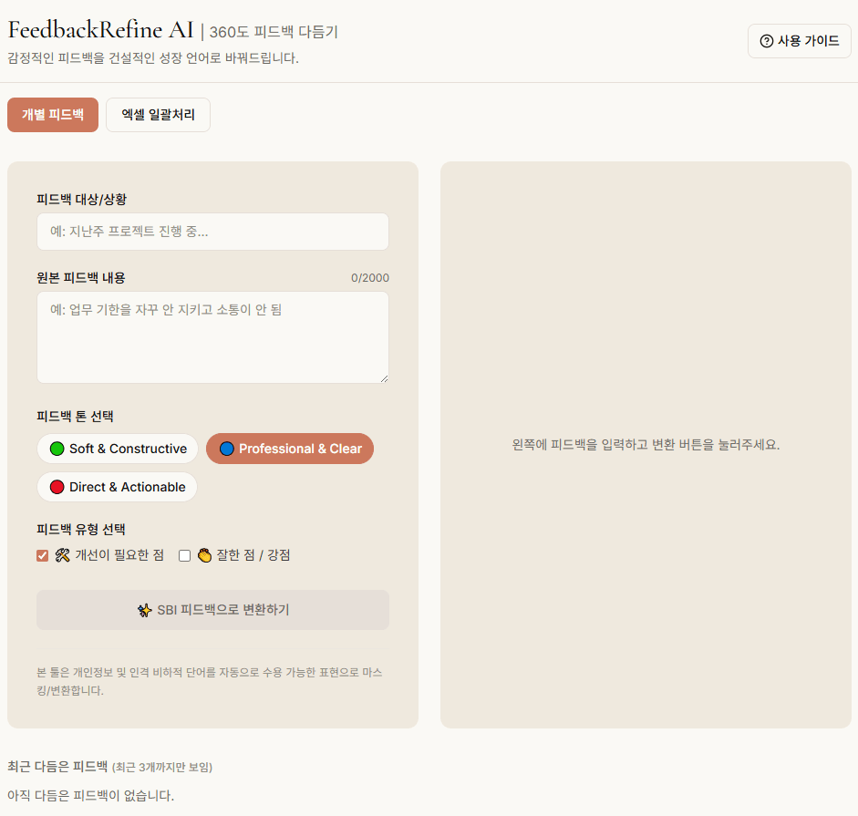
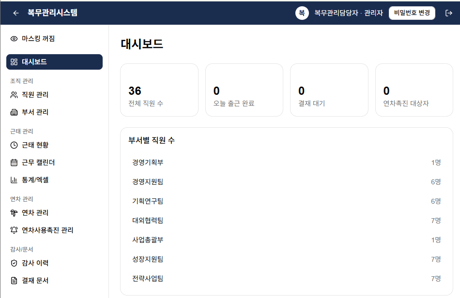
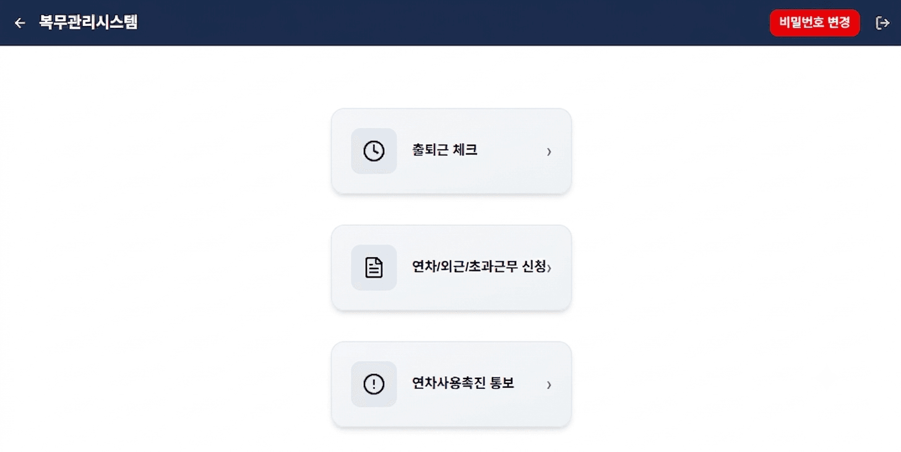

공공기관 인사·복무 업무를 자동화 시스템으로.
AI가 평가 피드백을 쓰고, 모바일이 결재를 처리합니다.
담당자는 사람에게, 조직은 성과에 다시 집중합니다.

두 개의 부서에서 두 명의 담당자가 엑셀과 종이로 관리하는 인사평가와 복무 데이터.
집계는 늦어지고,
결재는 사라지고, 담당자는 사람이 아닌 서류에 매여 있습니다.
인사평가와 복무관리가 서로 다른 부서에서 별도 담당자에 의해 운영되어 자료가 흩어지고, 대사와 검증에
반복적인 시간이 투입됩니다.
엑셀 취합 · 이메일 결재 · 종이 대장으로 이루어지는 업무는 오류 가능성과 처리 지연을 구조적으로 안고 있으며, 기관장 보고의 신뢰도를 낮춥니다.
업적 · 역량 · 다면평가의 직급별 반영비율을 매년 손으로 다시 계산해야 하며, 내규가 바뀔 때마다 전체 산식을
재작성해야 합니다.
누가 어디에서 근무 중인지, 이번 달 초과근무는 얼마인지 관리자는 월말이 되어야 확인이 가능하고,
법정 보관의무 대응도 어렵습니다.
인사평가와 복무관리를 하나의 계정 · 하나의 조직도 · 하나의 데이터 기반 위에.
담당자는 이중 입력에서 해방되고,
관리자는 하나의 화면에서 조직 전체를 봅니다.
업적 · 역량 · 다면 3종 평가를 하나의 시스템으로
통합하고,
성과편람 · 근무평정 내규에 따라 반영비율을 자동 산출합니다.
AI가 평가 피드백을 작성하고
전 직원에게 자동 송부합니다.
출퇴근 · 연차 · 외근 · 초과근무 신청부터 결재까지
모바일 하나로.
팀장 → 부장 → 기관장 3단계 자동 결재와 GPS 기반 출퇴근 기록,
실시간 대시보드로 조직 전체 현황을 한눈에 파악합니다.
지표 확정부터 자기평가, 채점, 결과 공개, 이의신청까지 —
연간 평가 사이클을 하나의 시스템에서 자동화합니다.
내규가 바뀌어도 반영비율은 시스템이 다시 계산합니다.


업적 · 역량 · 다면평가를 하나의 시스템에서 관리하고 직급별 반영비율을 자동 산출합니다.
평가 결과를 기반으로 개인별 피드백을 AI가 작성하고, 전 직원에게 이메일로 자동 송부합니다.
성과편람 · 근무평정 내규 변경 시 반영비율과 산식이
자동 갱신되어 재작성 부담이 없습니다.
마스터관리자 · 평가자 · 팀원 3단 권한과 주요 민감 데이터
암호화, 감사로그로 오남용을 차단합니다.
출근 버튼 한 번으로 GPS 좌표가 기록되고,
연차 · 외근 · 초과근무 신청은 팀장 → 부장 → 기관장 3단계로
자동 결재됩니다.
종이 없는 결재 · 실시간 현황 파악 · 법정 보관의무를 동시에 충족합니다.


버튼 클릭 한 번으로 위치 기반 출퇴근을 기록하고, 지정 범위 이탈 시 자동 표시합니다.
연차 · 외근 · 초과근무 신청이 팀장 → 부장 → 기관장으로
자동 라우팅되어 지연과 누락을 해소합니다.
관리자는 대시보드 하나에서 근무 현황 · 초과근무 ·
연차 잔여를 실시간으로 확인합니다.
근태 · 결재 이력이 자동 보관되어 감사 대응과 국가 보안 기준 기반의 기록 관리를 완비합니다.
대형 HRM 패키지 대비 구축 비용과 기간은 획기적으로 줄이고,
공공기관에 필수적인 보안 준수 체계와 유연한
클라우드 확장성을 함께 제공합니다.
기획부터 UI, 백엔드 개발까지 AI 활용으로 기존 SI 대비 구축 기간과 비용을 단축합니다.
초기 도입 부담을 낮춘 가벼운 SaaS 구조 지원 및 공공 전용 클라우드로의 유연한 확장을 지원합니다.
React · Next.js 표준 스택 적용으로 특정 벤더 종속(Lock-in) 없이
자체 유지보수가 가능합니다.
계정 발급 → 조직 및 내규 세팅 → 정식 운영으로 이어지는 압축 프로세스로 신속하게 시작합니다.
개인정보보호법 및 국정원 보안 가이드라인 준수, GS/CSAP
인증 기준에 부합하는 보안 설계를 탑재했습니다.
| 항목 | 기존 (수기 · 대형 SI) | HR One |
|---|---|---|
| 구축 방식 | SI 개발 · 커스터마이징 | AI 기반 신속 구축 |
| 인프라 / 운영비 | 고정 라이선스 · 전용 서버 구축비 | 초기 부담을 줄인 가벼운 SaaS / 확장형 |
| 보안 및 내규 | 수작업 대사 · 별도 보안 설정 | 공공 보안 준수 · 내규 자동 산출 |
| 평가 피드백 | 담당자 수동 작성 · 이메일 | AI 작성 · 자동 송부 |
| 유지보수 종속성 | 벤더 락인 | 표준 스택 · 자체 유지 가능 |
무료 시연으로 실제 화면을 먼저 확인하시고,
기관 현황에 맞춘 컨설팅 미팅을 통해 도입 범위와 일정을
설계해 드립니다.
기관 정보와 관리자 계정을 발급하여 즉시 시스템에 접근할 수 있도록
준비합니다.
조직도 · 직급 체계 · 평가 반영비율 · 결재선을 기관 내규에 맞춰
설정합니다.
임직원 온보딩 교육과 함께
정식 운영을 시작하고, 초기 안정화를
지원합니다.